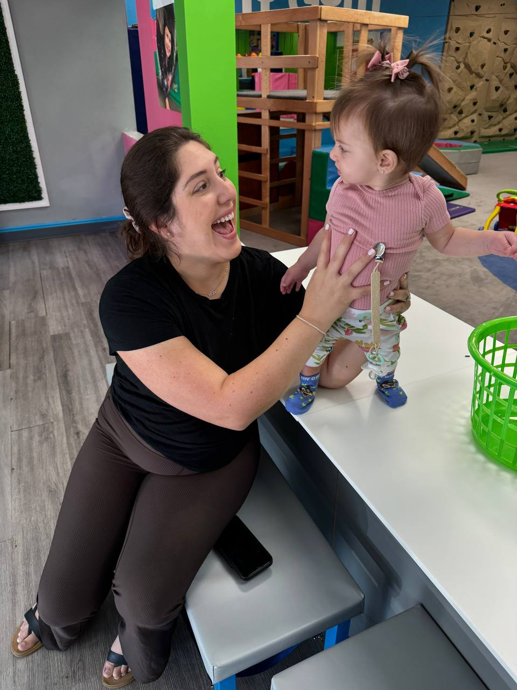
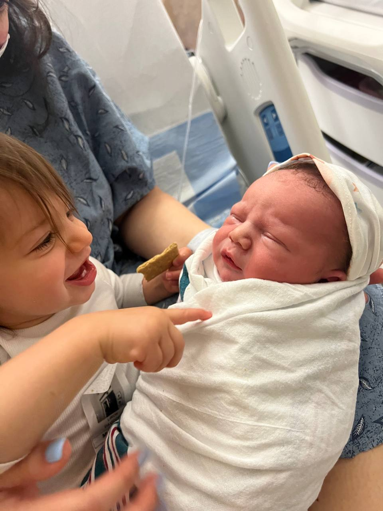
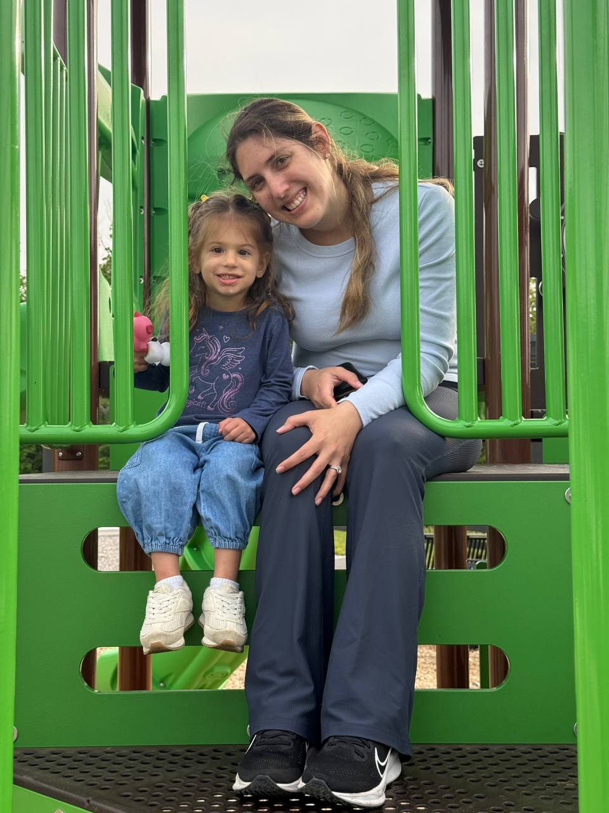

Our Story, In Moments
10 moments that capture the heart of our family
Maya's First Day
The world changed in the most beautiful way. On December 11, 2023, you held your first baby for the first time, and something shifted inside you — everything else became background noise. Maya came into this world, and you became the most beautiful mom we could have ever imagined. That warmth you felt in that first moment? It's the same warmth you give every single day.

Maya's First Doctor Visit
The big milestone of checking off your first list as a new mom — Maya's first checkup. You held her so carefully, watching every little movement with those super-focused mom eyes. The way you took notes and asked questions told us everything — you're the kind of mom who is always, always prepared.

Maya's First Play Gym
Your first adventure out into the big wide world together — Maya's first play gym. She was a bundle of curiosity in your arms, taking it all in while you made her feel safe and excited. Watching her discover new sounds, colors, and textures through your eyes — that was magic.

Maya's First Crawl
One day she was just lying there, and the next day — zoom! — Maya was on the move. You probably felt a rush of pride and a pinch of "time is flying" all at once. That first crawl was the beginning of so many adventures, and you were right there beside her, catching her every time she tumbled.

Happy Together, Mom & Maya
This is the look. The look of a mom and daughter who are completely in their element together. Pure joy, unfiltered love, and a connection that you don't have to explain to anyone to understand. This is what motherhood looks like — and it's absolutely perfect.

Maya's First Birthday
One whole year of you being Maya's mom. One year of sleepless nights that became the best nights, of first giggles, first sounds, first steps toward you. She blew out her candles and you probably cried — because a year ago she was in your arms for the very first time, and now she's a person. A whole person. Your person.

Adam Joins the World
Just under a year after Maya arrived, Adam made his grand entrance on December 13, 2024. Maya's face when she met her baby brother — that pure, wide-eyed happiness — told the whole story. She already knew: her world was about to get even bigger and even brighter. And you, Nicole, somehow found a whole new room in your heart overnight.

Maya Shows Mommy How Much She Loves Her
Your first Mother's Day as a mom of two — and Maya, sweet Maya, showed you exactly how much you mean to her. Maybe it was a hug, a "I love you, mommy," or the way she looked at you like you hung the stars. In that moment, all the sleepless nights and the chaos and the beautiful mess of it all made perfect sense.

Mommy & Maya Meet Mickey
There's something about a mom at Disney that's just different — she makes it feel like magic without trying. Mickey was waving, the kids were laughing, and you were in your element — creating memories that will live in their hearts forever. This is what Mom does. She turns a theme park into a fairy tale.

Fun Times at the Playground
The simplest moments are the ones that stay with you forever. Pushing Maya on the swings, watching her laugh as she reaches for the sky. Playing on the slide together. You're not just watching them play — you're playing alongside them, being a kid again, remembering what it feels like to be loved without conditions. This is what home feels like.